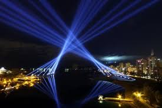

Sistemas Interactivos y Tecnología en Tiempo Real
El trabajo de Lozano-Hemmer se basa en sistemas tecnológicos que reaccionan a la presencia humana. para ello utiliza:
- Cámaras
- Sensores de movimiento
- Micrófonos
- Sistemas biométricos
- Software interactivo
- Proyecciones digitales
Destacadas
Pulse Room

Instalación interactiva basada en pulsaciones cardíacas y luz.
Vectorial Elevation

Proyecto de iluminación urbana participativa a gran escala.
33 Questions Per Minute
Sistema automatizado que genera preguntas constantemente
Experiencia en Tiempo Real
Las obras responden instantáneamente a la interacción del público, creando experiencias visuales y sonoras únicas. El espectador no solo observa, sino que modifica activamente el comportamiento de la obra.